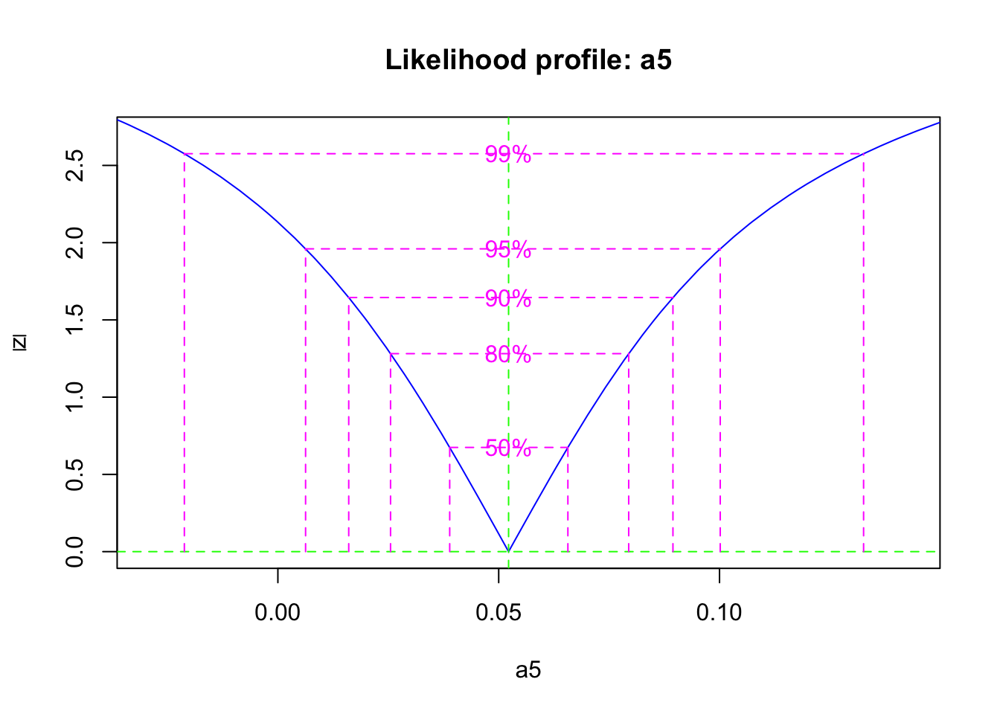
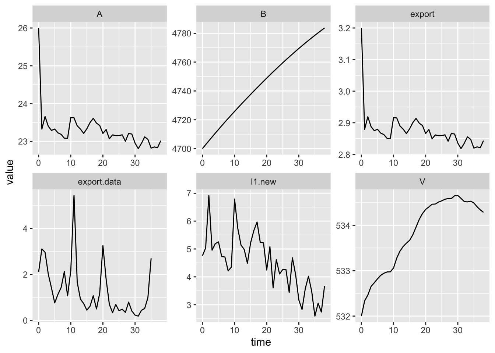
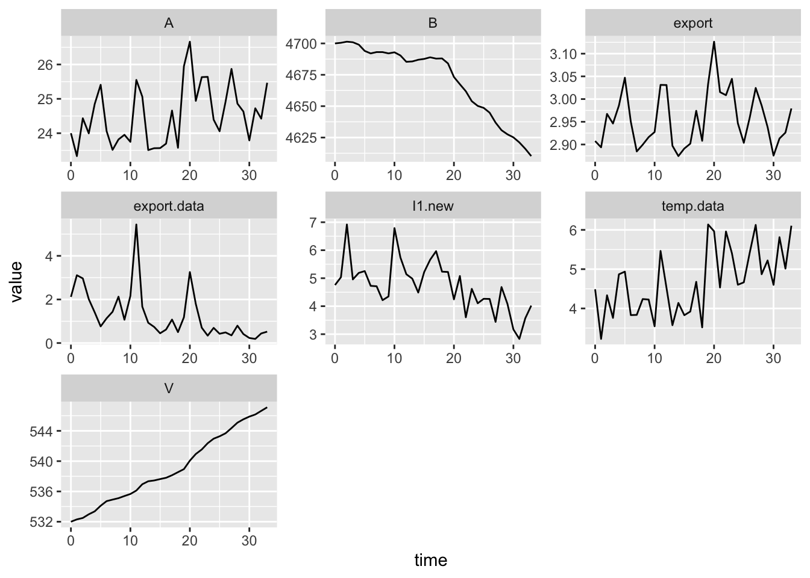

10 Optimization
This chapter walks through an example of computational techniques to improve our estimates of ecosystem fluxes.
10.1 Introduction
Sometimes we want to find values of parameters by picking those that cause the model output to match observed data as closely as possible. We call this optimization or calibration. Usually calibration refers to the entire modeling process, whereas optimization refers to the computational techniques used to make the model-data match as close as possible.
In general, the goal of optimization is to minimize the differences between data and a model. Another way to think about this is that we want a model that would maximize the probability that the data could have been generated by that model. This approach is maximum likelihood. That is what we will do here. If you are interested in these topics, I recommend highly a great introduction by Ben Bolker (Bolker 2008).
We will use our most recent Bormann model, with self-limiting vegetation, and an axiliary variable for stream export (‘loss’).
We start by loading libraries we will need, and cleaning up the workspace.
10.2 Bormann logistic model
Acquire a copy of BormannLogistic.R.
The following is code to run the ODE model. First we source the R script to load the model, and then we inspect it to make make sure that it is what we expect.
# The next line of code loads and runs a file. It requires that this script
# is in R's working directory.
# Alternatively, you could include the entire path in the file name.
# getwd() # will tell you what the working directory is.
source("code/BormannLogistic.R")
# bormann.logisticNext we recreate the parameters and integrate to remind ourselves of of the model. See Chapter 2 for details.
p <- c( I1 = 6.5, # deposition
I2 = 14.2, # N fixation
a1 = 79.6/(532*26), # uptake by vegetation (V)
a2 = (6.6 + 0.8)/532, # root exudation into available pool
a3 = (54.2 + 2.7 + 6.2 + 0.1)/532, # litter fall, etc.
a4 = 69.6/4700, # net mineralization
a5 = 3.9/26, # export from available pool to stream
a6 = 0.1/4700, # export from bound pool to stream
K = 600 # carrying capacity of vegetation
)
## Initial values
y0 <- c(V = 532, A = 26, B = 4700)
## times that we want R to return
t <- seq(from = 0, to = 10, by = .1)
## Integrate
out <- ode(y = y0, times = t, func = bormann.logistic, parms = p)
## rearrange to long format and plot
out2 <- out %>% as.data.frame() %>%
pivot_longer(cols=-time)
ggplot(out2, aes(time, value)) + geom_line() +
facet_wrap(~ name, scales="free", nrow=1)
Figure 10.1: Our model’s output.
10.3 Fitting a model to data
When we ‘fit models to data’, we typically use a computational tool to minimize the differences between data and the state variables in our model output. But what are our data, and what and how do we minimize these?
- Do we compare trajectories, or just end points?
- Do we minimize deviations between all state variables and the data, or just those we are confident about?
- Do we keep the deviations so that they are on the original scale of the data, such that large pools carry more weight than small pools? Do we scale them to give each of the state variables more similar weight?
10.3.1 Minimization
In most optimization procedures, we follow a series of steps:
- select state variables in our model to compare to observed data,
- select model parameters to optimize,
- create an objective function that calculates the deviation between model predictions - the deviance,
- select an algorithm that varies our model parameter, recalculates the deviance, and compares the new deviance to previous deviances,
- repeats the previous step until a smaller deviance can no longer be found.
Here is our example of an objective function that searches for values of \(a_4\) (mineralization rate) that minimize deviations between the model output (values of \(V\), \(A\), \(B\) at \(t = 500\)) and the data on pool size, provided by Bormann et al. (1977).
In our first example, we will compare endpoints of model output for the three state variables (A, V, B) at year 500 to our 1977 snapshot of data from Boprmann et al. (1977).
We also need to choose one or more parameters to optimize. We will select one that is associated with high sensitivity: mineralization rate, \(a_4\).
10.3.2 Creating the objective function
The point of the objective function is to calculate the difference between model output and data. It needs to generate model output using the parameter(s) of interest, and then calculate a number that quantifies the total difference between the predictions and the data. This calculation can take many forms, but some are more useful than others:
- Sum or mean of the squared deviations,
- Entropy,
- Sum of the negative log-likelihoods.
If we minimize the negative log-likelihoods, then we will have maximized the likelihood of the data, given the model we used. We can then use this quantity to calculate frequentist confidence intervals and Bayesian credible intervals, if we have made wise choices about our probability model (e.g., Normal, binomial) and if our data conform to certain underlying assumptions (e.g., conditional independence). These are important choices and assumptions which we won’t have a chance to explore. See Bolker (2008) for an excellent introduction.
For our objective function we will use the negative log-likelihood of our data. This is a little obtuse, but it will be our goal to maximize the probability of our data by tweaking one or two of the model parameters. This will give us teh maximum likelihood estimates for the parameters we tweak.
Maximum likelihood estimates rely on our choice of the probability model. The probability model we use in this instance is the normal or Gaussian distribution: we assume the deviates (differences between the data and the model prediction) are normally distributed. We specify the likelihoods using the built-in R function dnorm() which returns the probability density for particular data, given a mean and a standard deviation.
For an example, let’s assume our model of vegetation biomass with particular parameter values predicts a mean biomass of 10 and about 68% of the observations are between 9 and 11 (i.e.standard deviation of 1). This results in a bell-shaped probability density function centered on ten:
m <- 10; SD <- 1
## calculating the probability density for all values
## between 7 and 13
curve(dnorm(x, m=m, sd=SD), 7, 13, main="our model")
If we want to know the probability density of \(x=9\), then we can find just that:
## [1] 0.2419707Now imagine our model output is 10, and our observed datum is 9. Got that? Okay, now imagine we collect all of those probability densities for all of our model-data comparisons. That is what our objective function will do.
The objective function we use is the likelihood of the data, given our hypothesis, which we write as: \[\mathcal{L}\left(\theta | x\right) = p_\theta\left(x\right) = P_\theta\left(X=x\right)\] and this is the probability density or probability mass for our particular data points, assuming a particular hypothesis for what we expect them to be. Because we nearly always have more than one datum, we sum these densities and commonly refer to that sum as “the likelihood”.
\[\mathcal{L}\left(\theta | x\right) = \sum_{i=1}^n \mathcal{N}\left(x_i | \mu = \theta,\,\sigma\right)\]
For reasons of convenience and computational accuracy, we typically work with the negative logarithm of of the likelihood (the negative log-likelihood), for instance, using this code:
nll <- -1 * sum( dnorm(data, mean=model.output, sd=SD.data, log=TRUE))
If we analyze this from the inside out, we might see that the mean of our assumed Normal distribution is whatever the model predicted. The standard deviation of our assumed normal distribution comes from the deviates. We use the argument log=TRUE because it allows the computer to be more accurate, and minimizing the log or the original scale has the same result. The function dnorm() calculates all of the probability densities for the data given the model. We then sum all of these. The sum is the log of the likelihood of the data, given the model.
We finally use the negative value so that we can minimize this quantity, because nearly all such optimization algorithms minimize rather than maximize the objective function.
We will use an optimization routine that measures the likelihood for many values of our parameter of interest, and identify the value that maximizes the likelihood. This procedure will thereby provide the maximum likelihood estimate of the parameter of interest. It is called this because the procedure selects the value of the parameter that maximizes the likelihood of the data, given the model.
Our objective function takes as arguments the various R objects it needs to run. It then first generates model output, given the parameter estimate, then calculates the sum of the negative log-probability densities.
nll.bormann.mineralization <- function(a4, y0, t, p, our.data) {
## an objective function whose arguments includes
## a4 - the parameter of interest
## Assign a new value of the parameter to our set of parameters
p['a4'] <- a4
## run the model
## When you use this objective function later,
## you will need to make sure that
## -- y0 is what you intend
## -- t has the values that you need, where the end point is
## the endpoint you want,
## -- the parameters, p, are the original, or intended, set.
out <- ode(y = y0, times = t, func = bormann.logistic, parms = p)
## store the last values of the state variables
## determine the index for last row of output
nr <- nrow(out)
## extract the last row of the state variables you want
model.output <- out[nr,c("V", "A", "B")]
## Calculate the sum of the negative log-likelihoods
## first the deviates
diffs <- model.output - our.data
## next the standard dev of the deviates.
SD <- sqrt( sum(diffs^2)/length(diffs) )
## neg log likelihood
nll <- -sum( dnorm(our.data, m=model.output, sd=SD, log=TRUE))
## return the value
nll
}Next, we use our objective function with optim() to find the value of a4 that minimizes the objective function. First, we’ll define the data to which we compare the model. We need to use the same name that we used in the objective function.
10.3.3 optim()
Next, we use optim, where
paris a named vector of the parameter(s).fnis the objective function.- other R objects needed for the function.
- an optimization method;
BFGSis method appropriate for when we have a single parameter.
## specify times we want.
t <- c(0, 500)
fit0 <- optim(par=c(a4=0.015),
fn = nll.bormann.mineralization,
our.data=observed.data, y0=y0, t=t, p=p,
method="BFGS"
)Now let’s examine the result of the optimization.
## $par
## a4
## 0.01816917
##
## $value
## [1] 15.26674
##
## $counts
## function gradient
## 65 5
##
## $convergence
## [1] 0
##
## $message
## NULLThe par is the value of the parameter for which the minimum was reached. Compare with the value of mineralzation rate that we started with was \(a_4 = 69.6/4700 =\) 0.015. The value is the value of the objective function, which was minimized by the parameter value par.
Now let’s rerun the model with the optimized value, and look at the output. We first create a new parameter vector, and insert the optimized mineralization rate.
Now we can rerun the ODE model with the original and the optimized values of the mineralization rate.
out.original <- as.data.frame( ode(y = y0, times = 0:500, func = bormann.logistic, parms = p))
out.opt <- as.data.frame( ode(y = y0, times = 0:500, func = bormann.logistic, parms = p.opt))When we plot both sets of ouput and the data, we see the differences among all three.
out.original <- out.original %>%
mutate(run=rep("original", nrow(out.original)))
out.opt <- out.opt %>%
mutate(run=rep("optimized", nrow(out.opt)) )
out.b <- rbind(out.original, out.opt)
out.b.long <- out.b %>%
pivot_longer(cols=V:loss, names_to="Variable", values_to="value")
out.b.long <- out.b.long %>%
mutate(
our.data=case_when(Variable=="V" ~ observed.data['V'],
Variable=="A" ~ observed.data['A'],
Variable=="B" ~ observed.data['B'])
)
ggplot(out.b.long, aes(x=time, y=value, colour=run)) +
geom_line() + geom_line(aes(x=time, y=our.data), linetype=2) +
facet_wrap(~Variable, scales="free")  We can see that with our new value for mineralization, the model now correctly predicts the value of the bound soil nitrogen. This is in part because \(B\) has much larger values than (1000s) that either \(V\) (100s) or \(A\) (10s). At the end of this chapter, we cover the weighting of state variables a little more.
We can see that with our new value for mineralization, the model now correctly predicts the value of the bound soil nitrogen. This is in part because \(B\) has much larger values than (1000s) that either \(V\) (100s) or \(A\) (10s). At the end of this chapter, we cover the weighting of state variables a little more.
10.3.4 mle2()
Above, we walked through he use of optim(), but now let’s do something vary similar, but where the output allows us to calculate a confidence interval. We use a function from Bolker’s bbmle package.
The arguments to mle2() differ from those of optim(). In particular, our parameters that we want to optimize are specified in the start argument, and additional R objects are speified in the data argument. Both of these arguments must be lists. Also, the objective function must return the negative log-likelihood, See ?mle2 for more information.
fit.mle <- mle2(minuslogl = nll.bormann.mineralization,
start=list(a4=0.015),
data=list(our.data=observed.data,
y0=y0, t=t, p=p),
method="BFGS" )
summary(fit.mle)## Maximum likelihood estimation
##
## Call:
## mle2(minuslogl = nll.bormann.mineralization, start = list(a4 = 0.015),
## method = "BFGS", data = list(our.data = observed.data, y0 = y0,
## t = t, p = p))
##
## Coefficients:
## Estimate Std. Error z value Pr(z)
## a4 0.01816917 0.00016373 110.97 < 2.2e-16 ***
## ---
## Signif. codes: 0 '***' 0.001 '**' 0.01 '*' 0.05 '.' 0.1 ' ' 1
##
## -2 log L: 30.53348Now we calculate the likelihood profile of the parameter, and a 95% confidence interval.
## 2.5 % 97.5 %
## 0.01774460 0.01859578If we return to our choices described above, we might consider several things. First, we might think that we have relatively accurate and precise estimates of the vegetation and available pools, but poor estimates of the bound pool. Therefore, we might want to fit the model to just the vegetation and available pools. However, given that the system is all connected, we may not want to take such drastic action.
These huge differences in uncertainty result in different estimates of mineralization rate. Thus, the more we know, the more we can learn.
10.4 Trajectory matching
Up until now, we have compared model output to a data for just a single time point. Here we fit the model to time series, and try to match the trajectory of the model with that of the data, for a single state variable, stream nitrogen export.
First we read in an environmental data set, and visually inspect the data. I have put my data sets in a subdirectory called, “data”, and so read it in from that directory.
## we skip the first 7 lines because those contain metadata
HB.df <- read.csv("data/env_data_HB.csv", skip=7)
ggplot(data=HB.df, aes(x=year, y=value)) + geom_line() +
facet_wrap(~factor, scales='free')
Figure 10.2: Hubbard Brook Watershed 6 N export.
We will use just the export data, so I’ll extract that.
As our model is based on Bormann et al. (1977), we will, somewhat arbitrarily, take 1975 as our year 0 date. With that start date, we have a total of forty years (2014-1974) worth of data that we will use to calibrate
We might first want to ask which of our parameters might have the biggest effects on N export. We should start with an ecological rationale, and then c check that with a sensitivity analysis.
## load our sensitivity function
source("code/sensitivity.R") # sensitivities of all variables
b1 <- sensitivity(y.initial=y0, times=0:100,
func=bormann.logistic, parms=p,
dev.type='normalized',
summary.type="arithmetic_mean")
b1$deviation.summary## parameters V A B loss
## 1 I1 1.616114e-02 0.0648952101 0.0031875695 0.06312195
## 2 I2 7.203745e-03 0.0439477822 0.0556313516 0.04428581
## 3 a1 1.154075e-02 -0.9435602797 0.0025246797 -0.91633929
## 4 a2 -2.045314e-02 0.0157857203 -0.0039319107 0.01521604
## 5 a3 -1.403600e-01 0.3372101742 0.2237934605 0.33393548
## 6 a4 1.488759e-01 0.5252500483 -0.2584417662 0.50271445
## 7 a5 -9.176147e-03 -0.0367042540 -0.0017762039 0.93550236
## 8 a6 -9.777648e-05 -0.0002706947 -0.0003959925 0.02848715
## 9 K 1.490299e-01 -0.1155934257 0.0278000392 -0.11144794From this we see that fluxes associated with the mineral pool (A, readily available for plant uptake) have the greatest effect on export (“loss”). Interestingly, plant uptake seems just as important as export rate itself. Let’s by fitting the rate of export.
Next, we need an objective function that calculations the sum of squared deviations between the export state variable in our model and in our data.
nll.bormann.a5.traj <- function(y0, t, p, a5, export) {
## an objective function whose arguments are
## Assign a new value of the parameter to our set of parameters
p['a5'] <- a5
## run the model
## starting with 'initial.values' and t for time
## t must be the same time points for which we have data.
out <- ode(y = y0, times = t, func = bormann.logistic, parms = p)
model.output <- out[,"loss"]
## Calculate the negative log-likelihood
SD <- sqrt( sum( (export - model.output)^2 )/length(export) )
nll <- - sum( dnorm(export, mean=model.output, sd=SD))
nll
}Now we select the data we want from the data set. We ‘filter’ out just the data we want. Below we use %in% to mean ‘within’, so translating, the code reads “’”filter out the subset of Ne.df for which the variable ‘year’ is within the define years in ‘year.subset’, and then make a new time variable ‘y’ where 0 is 1975.”
year.subset <- 1975:2014
#
data.subset <- Ne.df %>% filter(year %in% year.subset)
##View(data.subset)
t <- data.subset$year-1975
y0 <- c(V = 532, A = 26, B = 4700)
p2 <- p
fit.a5 <- optim(f = nll.bormann.a5.traj,
par=c(a5 = 0.15),
y0=y0, t=t, p=p2,
export=data.subset$value,
method="Brent",
lower = 0.01, upper=0.5,
hessian=TRUE)
# list(est=fit.a5$par,
# SD=sqrt( solve(fit.a5$hessian) ) )
fit.a5.mle2 <- mle2(nll.bormann.a5.traj, start=list(a5=0.05),
data=list(export=data.subset$value,
y0=y0, t=t, p=p2),
method="BFGS")
summary(fit.a5.mle2)## Maximum likelihood estimation
##
## Call:
## mle2(minuslogl = nll.bormann.a5.traj, start = list(a5 = 0.05),
## method = "BFGS", data = list(export = data.subset$value,
## y0 = y0, t = t, p = p2))
##
## Coefficients:
## Estimate Std. Error z value Pr(z)
## a5 0.052238 0.019427 2.689 0.007167 **
## ---
## Signif. codes: 0 '***' 0.001 '**' 0.01 '*' 0.05 '.' 0.1 ' ' 1
##
## -2 log L: -15.46905
## 2.5 % 97.5 %
## 0.006256104 0.100196747## $par
## [1] 0.05223814
##
## $value
## [1] -7.734526
##
## $counts
## function gradient
## NA NA
##
## $convergence
## [1] 0
##
## $message
## NULL
##
## $hessian
## [,1]
## [1,] 2647.194## a5
## 0.15Now we can rerun the ODE model with the original and the optimized values of the mineralization rate.
out.orig <- as.data.frame(
ode(y = y0, times = 0:39, func = bormann.logistic, parms = p)
)
out.a5 <- as.data.frame(
ode(y = y0, times = 0:39, func = bormann.logistic, parms = p.a5)
)Now we would like to do is to compare the trajectories of the data and the model.
plot(out.orig$time, out.orig$loss,
type='l', lty=3, ylim=c(0,10))
lines(out.orig$time, out.a5$loss, lty=2)
lines(out.orig$time, data.subset$value, lty=1)
legend('topright',
legend=c('original', 'fitted', 'data'),
lty=c(3,2,1))This shows us the model tends to underestimate at first, and then consistently over estimate over time.
So,…what do we make of this? Why might this make sense?
A couple of things to consider when matching trajectories in data and models:
- are the averages similar?
- if the time series data have a trend (i.e. are non-stationary), does the model show a similar trend?
- is the variability similar in magnitude and timing?
Another way to examine it is the examine how the deviations between model and data might vary over time.
## or the deviations over time (fitted - data)
devs <- out.a5$loss - data.subset$value
qplot(x=out.a5$time, y=devs) + geom_point() + geom_smooth() 
If we want to check the effect of this we plot both sets of ouput and the data, we see the differences among all three. This time, we’ll take advantage of ggplot2 graphics.
## add a new column
## this will repeat the label for all rows of the data frame
out.orig$version <- "Original"
out.a5$version <- "Fitted"
names(out.orig)## [1] "time" "V" "A" "B" "loss" "version"## combine ('bind') all rows of both data frames...
out2 <- rbind(out.orig, out.a5) %>%
## ... and then stack up all of the state variables,
## from V to loss
pivot_longer(cols=V:loss, names_to="variable", values_to="value")
## plot what we want
ggplot(data=out2, aes(x=time, y=value, colour=version)) +
## line graphs for time series
geom_line() +
## separate each state variable in its own subfigure with its own scale
facet_wrap(~variable, scales = "free")
10.5 Two (or more) parameters at a time
Here we use the same approach, in which we have an objective function, parameters of interest, and data.
Here is our objective function, and you can see it is not very different. Find and explain the difference.
nll.bormann.a5.4.traj <- function(a5, a4, data, y0, t, p) {
## an objective function whose arguments are
## params - the parameter of interest
## data - data from Bormannm et al.
## Assign a new value of the parameter to our set of parameters
p['a5'] <- a5
p['a4'] <- a4
## run the model
## starting with 'initial.values' and t for time
out <- ode(y = y0, times = t, func = bormann.logistic, parms = p)
model.output <- out[,"loss"]
## Negative log-likelihood
## assuming normally distributed observation error
SD <- sqrt(sum( (data - model.output)^2)/length(data) )
nll <- - sum( dnorm(data, mean=model.output, sd=SD, log=TRUE))
}This will generate warnings, but we’ll ignore those for now. See Bolker (2008) for more information.
fit2.mle <- mle2(minuslogl = nll.bormann.a5.4.traj,
start=list(a5=0.05, a4=0.015),
data=list(data=data.subset$value,
y0=y0, t=t, p=p),
method="L-BFGS-B", lower=0)
summary(fit2.mle)## Maximum likelihood estimation
##
## Call:
## mle2(minuslogl = nll.bormann.a5.4.traj, start = list(a5 = 0.05,
## a4 = 0.015), method = "L-BFGS-B", data = list(data = data.subset$value,
## y0 = y0, t = t, p = p), lower = 0)
##
## Coefficients:
## Estimate Std. Error z value Pr(z)
## a5 0.0275558 0.0041166 6.6939 2.173e-11 ***
## a4 0.1434689 0.0448726 3.1972 0.001387 **
## ---
## Signif. codes: 0 '***' 0.001 '**' 0.01 '*' 0.05 '.' 0.1 ' ' 1
##
## -2 log L: 134.4075Now we substitute the fitted values into a new copy of the parameters.
Now we can rerun the ODE model with the original and the optimized values of the mineralization rate.
out.orig <- as.data.frame(
ode(y = y0, times = 0:39, func = bormann.logistic, parms = p)
)
out.2 <- as.data.frame(
ode(y = y0, times = 0:39, func = bormann.logistic, parms = p2)
)Now we would like to do is to compare the trajectories of the data and the model.
plot(out.orig$time, out.orig$loss,
type='l', lty=3, ylim=c(0,10))
lines(out.orig$time, out.2$loss, lty=2)
lines(out.orig$time, data.subset$value, lty=1)
legend('topright',
legend=c('original', 'fitted', 'data'),
lty=c(3,2,1))
Have at it. What can you learn today? What to we most want to know? Can we use the model to make hypotheses about processes that are not even in the model, like denitrification?
10.6 Other considerations: weighting deviations
When we assess more than one state variable at a time, the model fit might be unduly affected by state variables with the largest absolute values. In our case, that might mean that our fits might be determined by how well our model describes the soil pool. Therefore, we might want to at least weight the pools more equally by using the log-transformations of the output and data. This accomplishes two things. First, it weights the variables on a more similar scale. This may not matter for the result with some methods of optimization, but it can. Second, it makes the computation more stable and reliable to use both smaller numbers, and each on a more similar scale. This can make a big difference if you are having trouble getting the optimization to give reliable, repeatable results.
Another important issue is how confident we are in our observed data. If we believe that we are quite confident in some observations but know we are measuring others with low accuracy, then we can adjust for that uncertainty by using variance-weighted errors.
10.6.1 Variance weighted errors
We can build on this approach by directly weighting the model-data differences by the uncertainty in data data (Soetaert and Hermann, Chap. 4), \[\mathrm{SSE} = \sum_{i = 1}^{n}\frac{\left(m_i - d_i\right)^2}{e_i}\] where \(i\) is a particular state variable, \(m\) is model output, \(d\) is data, and \(e\) is the observed uncertainty of the data. Often this variance is calculated as the variance (\(\sigma^2\)) of the data.
The modified objective function includes a new argument, vars, which is a vector of the observed variances of the data.
sse.bormann.mineralization3 <- function(a4, data, vars) {
## an objective function whose arguments are
## params - the parameter of interest
## data - point estimates of the observed state variables from Bormannm et al.
## vars - observed variances of the data.
## Assign a new value of the parameter to our set of parameters
p['a4'] <- a4
## run the model
out <- ode(y = y0, times = t, func = bormann.logistic, parms = p)
## store the last values of the state variables
nr <- nrow(out)
model.output <- out[nr,c("V", "A", "B")]
## Calculate the sum of the squared differences
## squaring the differences makes them positives and
## weights big differences even more heavily
diffs <- model.output - data
diffs2 <- diffs^2
wdiffs2 <- diffs2/vars
sse <- sum( wdiffs2 )
## Return the SSE
sse
}Now we include estimates of the variances. Your guess is nearly as good as mine. Often the standard deviations approach or exceed the mean, which means that the coefficient of variation is \(\sigma/\mu > 1\). Let’s pretend that we know the vegetation and the available pools pretty well (\(\sigma/\mu \ll 1\)), but have great uncertainty about the bound pool(\(\sigma/\mu \gg 1\)).
Now we can fit the model to the data.
fitv <- optim(par=c(a4=0.014),
fn = sse.bormann.mineralization3,
data=observed.data, vars=vars,
method="BFGS")Last, let’s compare the three estimates of the mineralization rate.
## a4
## 0.01816917## a4
## 0.01585446…and graph the outcomes.
p.v <- p
p.v["a4"] <- fitv$par
out.original <- as.data.frame(
ode(y = y0, times = 0:500, func = bormann.logistic,
parms = p))
out.v <- as.data.frame(
ode(y = y0, times = 0:500, func = bormann.logistic,
parms = p.v))
out.original <- out.original %>%
mutate(run=rep("original", nrow(out.original)))
out.v <- out.opt %>%
mutate(run=rep("var.wt", nrow(out.opt)) )
out.b <- rbind(out.original, out.v)
out.b.long <- out.b %>%
pivot_longer(cols=V:loss, names_to="Variable", values_to="value")
ggplot(out.b.long, aes(x=time, y=value, colour=run)) +
geom_line() +
facet_wrap(~Variable, scales="free") 
Notice now that the fit to the bound pool does not dominate the fit.